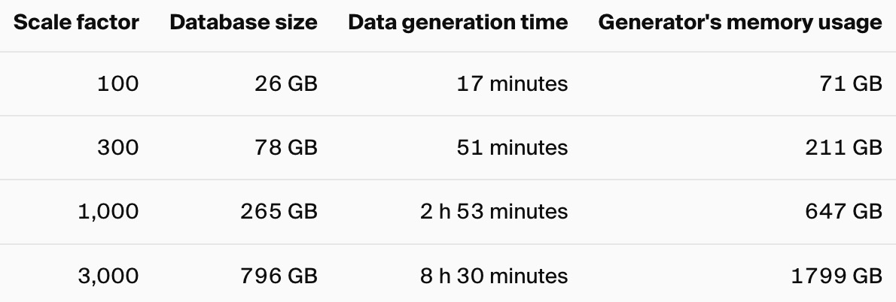

I’ve been interested in learning more about the Rust and Python ecosystems, particularly how the two can work together. For PyIceberg, we see a lot value in “pushing down” certain functions to the Rust layer. For example, partition transforms can be computed much more efficiently in Rust.
I also see a lot of value in using Python as a distribution layer for Rust programs. Most computers come with Python pre-installed, making pip install a widely accessible way to distribute software. In contrast, distributing Rust programs can be more complex, often requiring the Rust toolchain or hosting the binary somewhere (e.g., Homebrew).
By combining the best of both worlds, we can write efficient, high-performance programs in Rust and distribute them easily through Python. Projects like pydantic, uv, and ruff are great examples of this pattern.
I had a chance to apply this approach in the tpchgen-rs project and shipped the tpchgen-cli package on PyPI.
Generating TPC-H dataset
Recently, I discovered the tpchgen-rs project, where several members of the Apache DataFusion community collaborated to rewrite dbgen in Rust. For more context, check out the excellent post tpchgen-rs World’s fastest open source TPC-H data generator, written in Rust, which covers the entire journey.
dbgen is difficult to run by modern standards. I think the easiest way to use it today is through a Docker container.
The next best option is DuckDB’s TPC-H extension which generates all 8 TPC-H tables in-memory. These tables can then be exported to various formats such as csv or parquet. However, DuckDB’s dbgen takes a lot of time and resources, especially at higher scale factors. Here’s a table of scale factor compared to the storage size, processing time, and memory usage required to generate those datasets.

For SF100, DuckDB requires 26GB of storage, 17 minutes, and 71GB of memory. For SF3000, this becomes 796GB of storage, 8 hours and 30 minutes, and 1799GB of memory!!
In contrast, tpchgen rewrote the entire dbgen in Rust and ensures the same byte-for-byte output as the original implementation. It also introduced several performance optimizations for the data generation process. These improvements make it feasible to run large scale factors on my local Mac laptop.
For example, I can run SF1000.
➜ time tpchgen-cli -s 1000 --format=parquet --stdout > /dev/null
tpchgen-cli -s 1000 --format=parquet --stdout > /dev/null 6026.24s user 195.72s system 738% cpu 14:02.42 totalDuckDB would definitely OOM since I don’t have 647GB of memory :(
Shipping tpchgen-cli to Python
For such an awesome tool, I wanted to make it available to more users. And the best way to do that is through the python ecosystem. I also wanted an excuse to explore the rust<>python integration and maturin.
The goal is to make tpchgen-cli available in pypi so I can just do pip install tpchgen-cli. This will install a python executable and make tpchgen-cli available on the command line.
For the end users, this is what the workflow looks like:
pip install tpchgen-cli
tpchgen-cli -h # prints the help message
tpchgen-cli # generates all 8 tpch tablesFirst Try
I have some familiarly with rust<>python binding and maturin. My first instinct is to export the rust functions as python bindings, using pyo3 decorators. Then, create a python package using maturin. And finally, create a python executable to run the python bindings.
I didn’t want to recreate the arg parsing logic in python. So I opted to export rust’s Cli parser’s main function, with the goal of just passing the python args to it.
This required a bunch of tinkering to make sure everything is in place. It worked but wasn’t pretty. Generally, its not a good idea to export the main.rs functions and Cargo will emit a warning about it. But hey, it works…
Here’s the PR that clobbered everything together, https://github.com/clflushopt/tpchgen-rs/pull/119.
Second Try
While reading through the maturin user guide, I found an interesting section about bin, https://www.maturin.rs/bindings#bin.
Maturin also supports distributing binary applications written in Rust as Python packages using the bin bindings. Binaries are packaged into the wheel as “scripts” and are available on the user’s PATH (e.g. in the bin directory of a virtual environment) once installed.
Note: Maturin does not automatically detect bin bindings. You must specify them via either command line with -b bin or in pyproject.toml.
This is exactly what I wanted… Thanks maturin. I just wanted to repackage the rust bin into python executable/script.
The only extra config I had to specify was this in the pyproject.toml:
[tool.maturin]
bindings = "bin" # this makes maturin treat it as a binary crate (not a library)Here’s the final PR that shipped the python package, https://github.com/clflushopt/tpchgen-rs/pull/121.
The hardest part of the PR was getting the Github Action to publish to pypi correctly… Having worked with Github Actions a few times, this process can definitely be a lot better. But that’s a story for another day.
Fin
The tpchgen-cli package is now available on pypi, https://pypi.org/project/tpchgen-cli/. This package will also be automatically updated when the underlying rust binary is updated, since its just a wrapper.
Try it out:
pip install tpchgen-cli
which tpchgen-cli
# create a sf10 tpch dataset in parquet format with zstd compression
tpchgen-cli --scale-factor 10 --output-dir tpch_sf10 --format parquet --parquet-compression 'zstd(1)'Special thanks to @clflushopt, @alamb, and @scsmithr for creating the tpchgen-rs library.